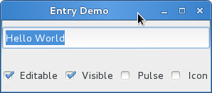

Entry输入框¶
输入框控件允许用户输入文本，你可以使用
Gtk.Entry.set_text() 方法来改变输入框的内容。使用
Gtk.Entry.get_text() 来获取输入框当前的内容。你也可以使用
Gtk.Entry.set_max_length() 限制输入框可以输入的最大文本数。
有时候你想要设置输入框只读，可以通过传递 False 给方法 Gtk.Entry.set_editable() 。
输入框也可以用来从用户获取密码，通常要隐藏用户的输入以避免输入被地丧恶人看见，调用
Gtk.Entry.set_visibility() 传递 False 可以使输入的文本被隐藏。
Gtk.Entry 也可以在文本的后面显示进度或者活动的信息，类似于
Gtk.ProgressBar 控件，用在浏览器中显示下载的进度。要使输入框显示这样的信息，需要调用
Gtk.Entry.set_progress_fraction() , Gtk.Entry.set_progress_pulse_step() 或
Gtk.Entry.progress_pulse() 。
另外，输入框也可以在前面或者后面显示图标，这些图标可以通过点击激活，可以设置为拖拽源，
也可以提示信息。要添加这样的图标，可以调用 Gtk.Entry.set_icon_from_stock() 或者任何一个
从图标的名字、pixbuf或icon主题中设置图标的变种函数。要设置图标的提示信息，使用
Gtk.Entry.set_icon_tooltip_text() 或者相应的函数。
Entry 输入框对象¶
-
class
Gtk.Entry¶ -
get_text()¶ 获取输入框控件的内容。
-
set_text(text)¶ 设置控件的文本，会替换原来的内容。
-
set_visibility(visible)¶ 设置输入框的内容是否可见。当 visible 为
False时， 字符显示为不可见的字符——即使是从其他地方复制过来的。
-
set_max_length(max)¶ 设置允许输入文本的最大长度。如果当前的内容比设置的长度常，则文本会被截断。
-
set_editable(is_editable)¶ 设置用户可否比啊及输入框中的内容。如果 is_editable 为
True，用户可以编辑文本。
-
set_progress_fraction(fraction)¶ 设置进度条指针填充到的进度，设置的值必须介于0.0和1.0之间，包括0和1。
-
set_progress_pulse_step(fraction)¶ 设置每次调用
progress_pulse()时进度反弹块移动的宽度占输入框总宽度的百分比。
-
progress_pulse()¶ 一些进度向前走了，但是你不知道前进了多少，调用词函数使输入框的进度指示针进入活动状态， 这样会有一个反弹块前后移动。每次调用
progress_pulse()会使反弹块移动一点 （移动的多少由set_progress_pulse_step()来决定）。
-
set_icon_from_stock(icon_pos, stock_id)¶ 设置在输入框的特定位置显示图标，图标 stock_id 参考 stock item 。 如果 stock_id 为
None，则不会显示图标。icon_pos 指定了图标放在输入框的哪一侧，可能的值有：
Gtk.EntryIconPosition.PRIMARY: 在输入框的开始（要根据文本的方向）。Gtk.EntryIconPosition.SECONDARY: 在输入框的结尾（要根据文本的方向）。
-
set_icon_tooltip_text(icon_pos, tooltip)¶ 设置 tooltip 的内容作为指定位置的图标的提示信息。如果 tooltip 为
None， 那么之前设置的提示信息被移除。icon_pos 允许的值参见
set_icon_from_stock()。
-
Example¶
1 2 3 4 5 6 7 8 9 10 11 12 13 14 15 16 17 18 19 20 21 22 23 24 25 26 27 28 29 30 31 32 33 34 35 36 37 38 39 40 41 42 43 44 45 46 47 48 49 50 51 52 53 54 55 56 57 58 59 60 61 62 63 64 65 66 67 68 69 70 71 72 73 74 75 76 | from gi.repository import Gtk, GObject
class EntryWindow(Gtk.Window):
def __init__(self):
Gtk.Window.__init__(self, title="Entry Demo")
self.set_size_request(200, 100)
self.timeout_id = None
vbox = Gtk.Box(orientation=Gtk.Orientation.VERTICAL, spacing=6)
self.add(vbox)
self.entry = Gtk.Entry()
self.entry.set_text("Hello World")
vbox.pack_start(self.entry, True, True, 0)
hbox = Gtk.Box(spacing=6)
vbox.pack_start(hbox, True, True, 0)
self.check_editable = Gtk.CheckButton("Editable")
self.check_editable.connect("toggled", self.on_editable_toggled)
self.check_editable.set_active(True)
hbox.pack_start(self.check_editable, True, True, 0)
self.check_visible = Gtk.CheckButton("Visible")
self.check_visible.connect("toggled", self.on_visible_toggled)
self.check_visible.set_active(True)
hbox.pack_start(self.check_visible, True, True, 0)
self.pulse = Gtk.CheckButton("Pulse")
self.pulse.connect("toggled", self.on_pulse_toggled)
self.pulse.set_active(False)
hbox.pack_start(self.pulse, True, True, 0)
self.icon = Gtk.CheckButton("Icon")
self.icon.connect("toggled", self.on_icon_toggled)
self.icon.set_active(False)
hbox.pack_start(self.icon, True, True, 0)
def on_editable_toggled(self, button):
value = button.get_active()
self.entry.set_editable(value)
def on_visible_toggled(self, button):
value = button.get_active()
self.entry.set_visibility(value)
def on_pulse_toggled(self, button):
if button.get_active():
# self.entry.set_progress_fraction(0.6)
self.entry.set_progress_pulse_step(0.2)
# Call self.do_pulse every 100 ms
self.timeout_id = GObject.timeout_add(100, self.do_pulse, None)
else:
# Don't call self.do_pulse anymore
GObject.source_remove(self.timeout_id)
self.timeout_id = None
self.entry.set_progress_pulse_step(0)
def do_pulse(self, user_data):
self.entry.progress_pulse()
return True
def on_icon_toggled(self, button):
if button.get_active():
stock_id = Gtk.STOCK_FIND
else:
stock_id = None
self.entry.set_icon_from_stock(Gtk.EntryIconPosition.PRIMARY,
stock_id)
win = EntryWindow()
win.connect("delete-event", Gtk.main_quit)
win.show_all()
Gtk.main()
|